直近1週間の人気フィード
はてなブックマーク数を元に新着優先で並べ替え
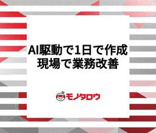
生成AIを使って割り込み業務を現場で勝手に改善したらちやほやされた話 722
722 MonotaRO Tech Blog
MonotaRO Tech Blog
こんにちは。2019年と2024年に記事を書いていた山本です。ますます元気にモノタロウで働いております。 さて、毎日、散発的に、突然やってくる割り込み業務って、地味～に疲れますよね。そんな負担がかかっているチームメンバーたちを少しでも楽にするため、生成AIを活用して業務改善をし、我ながら見事な成果を上げたものの、全然スマートじゃない野暮な設計をしているのが恥ずかしくて、公表と展開はチーム内だけに留めていました。 当社の生成AI活用のレベルが高いのは、他のブログ記事をご覧になれば分かると思います。これらに比べたらショボすぎて、恥ずかしかったのです。 tech-blog.monotaro.com …
3日前
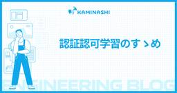
認証認可学習のすゝめ 173 カミナシ エンジニアブログ
カミナシ エンジニアブログ
カミナシの認証認可ユニットでソフトウェアエンジニアをやっているトモ=ロウです。 先日、過去に弊社で行った共通ID基盤構築プロジェクトに関するブログ記事を公開したのですが、お読みいただけたでしょうか？まだ読んでいない方は是非ご一読ください！ スタートアップがゼロから作る共通ID基盤：立ち上げ〜ID統合まで道のり（前編） - カミナシ エンジニアブログ スタートアップがゼロから作る共通ID基盤：ID統合のその先へ（後編） - カミナシ エンジニアブログ さて、今回は前半に「認証認可完全初心者だった自分が如何にしてID基盤構築プロジェクト完遂に貢献するに至ったか」という視点で僕がどのように認証認可の…
2日前
英語がもう苦手ではなくなったエンジニアが一つ殻を破るためにやった学習 320 Money Forward Developersのフィード
Money Forward Developersのフィード
さっそくまとめ私の職場では特にエンジニア組織のグローバル化が進んでいます私はそんな中、英語がほぼ話せない状態（CEFRレベル：A2）から入社し、1.5年間社会人として頑張れる範囲で英語学習を続けてきました初期は平日でも4時間程度の学習時間を確保していました現在は机に向かうのは1時間程度で、あとは通勤時間や隙間時間を利用して学習していますスピーキングにおいて、中上級者（CEFR:B2）とされるレベルに入るための最後のピースであったと感じている勉強法は主に2つですリスニング: ほぼ100% 1.5倍速までやるシャドーイングスピーキング: 結局瞬間英作文...
4日前
実装の 9 割を AI に任せる。食べログのジュニアエンジニアが構築した AI 連携開発フロー 260 Tabelog Tech Blog
Tabelog Tech Blog
こんにちは、食べログのアワード予約チームに所属するジュニアエンジニアの南野です。弊社では業務への AI 導入が進んでおり、開発のあり方が変わりつつあります。本記事では、実務で試行錯誤を行なった上で私が API 開発のリードタイムを削減させた AI 連携開発フローについてご紹介します。 今回の開発では、強力な助っ人として、役割の異なる 2 種類の AI が活躍してくれました。 開発環境で利用できたのが、こちらの AI たちです。 コーディングアシスタント: コーディングをサポートしてくれる AI です。今回、この役割は Cursor を使用しました 自律型 AI: 実装を自律的にこなしてくれる …
3日前
「ログ」から学んだ PostgreSQL のアーキテクチャの基本 55 PLEX Product Team Blog
PLEX Product Team Blog
こんにちは、Plex Job 開発チームの高岡です。 先日 PLEX TechCon 2025 が開催されました。 惜しくも登壇機会を得られなかったため、本記事にて発表する予定だった内容をまとめてみました。 来年こそは登壇を勝ち取ります 🔥 ▼ 当日の様子はこちら PLEX TechCon 2025 レポート - PLEX Product Team Blog はじめに PostgreSQLの構成 プロセス構成（全体図の赤の要素） メモリ構成（全体図の黄色の要素） 調査した3つのログ 1. チェックポイント処理のログ📝 概要 チューニングポイント 2. 自動バキューム処理のログ 🧹 概要 チュー…
2日前
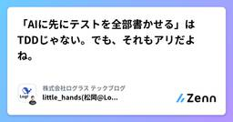
「AIに先にテストを全部書かせる」はTDDじゃない。でも、それもアリだよね。 73 株式会社ログラス テックブログのフィード
こんにちは、ログラスの松岡(@little_hand_s)です 3行まとめ「先にテストをまとめて書かせる」はTDDではない（サイクルと目的が違う）従来のTDDでは非推奨だったが、AI時代では有効な手法に違いを理解して使い分けることで、AI時代の開発がより効果的になる AI時代のTDDと、混乱しやすい実現方法最近、AI開発の文脈で「TDD（Test-Driven Development：テスト駆動設計）が有効」という話をよく聞くようになりました。ClaudeCode公式のベストプラクティスでも「TDDはエージェンティックコーディングによってさらに強力になる」と述べら...
3日前

開発生産性指標に判断基準を作ったら、チームの自律的な改善が始まった話 48 Raccoon Tech Blog [株式会社ラクーンホールディングス 技術戦略部ブログ]
Raccoon Tech Blog [株式会社ラクーンホールディングス 技術戦略部ブログ]
こんにちは、齋藤です！ 先日、Web Creators LTというイベントで「メトリクスの勘所」というタイトルで発表させていただきました。 この記事のはそのLTの内容をベースに、もっと内容を詳細に記載したものです。 開発 … "開発生産性指標に判断基準を作ったら、チームの自律的な改善が始まった話" の続きを読む
3日前
AIによる手動QAの自動化：自動テストコーディングのAI化でテスト実行工数を52%削減 207 Tabelog Tech Blog
はじめに：AI4QA Phase1からPhase2への進化 こんにちは。食べログの品質管理部でAI4QAプロジェクトのプロジェクトリーダーを務める黎です。 食べログの品質管理部では、2025年7月に「AI4QA Phase1」として、生成AIを活用したテスト実装の効率化に取り組んできました。Phase1では、手動テストケースの実装をAIで支援し、直近の案件では手動実施399件中304件のテストケースをAIで実装することに成功しました。（前回記事: AIによる手動QAの自動化：食べログQAチームの挑戦、その第一歩） しかし、実際の運用を通じて一つの重要な課題が浮き彫りになりました。テスト実装をA…
4日前
ビルド30分→3分に。Next.jsをやめてAstroに移行した全記録 42
 ROXX開発者ブログ
ROXX開発者ブログ
こんにちは。ROXX Zキャリアプロダクト開発部、エンジニアの平です。 今回は、弊社の就職・転職ガイドメディアを Next.js Page Router から Astro + Cloudflare Workers へ移行し、ビルド時間を30分以上 → 3分、表示速度を大幅に改善した話をお届けします。 「記事を公開してから30分待つって何...？」と思われるかもしれませんが、これが私たちの現実でした。この記事では、どのようにこの問題を解決し、SEO パフォーマンスを大幅に改善したのかを詳しく書いていきます。 目次 どうしてこうなった？ 背景と課題 Next.js を捨てる決断をするまで ISR …
2日前
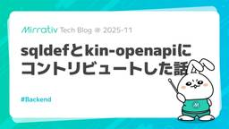
sqldefとkin-openapiにコントリビュートした話 21 Mirrativ Tech Blog
Mirrativ Tech Blog
こんにちは、バックエンド基盤チームの徳森です。 バックエンド基盤チームでは、バックエンドエンジニアの生産性向上やコスト削減を目的に、エンジニア主導で課題の発見や解決を行っています。 今回は、チームでの具体的な業務内容の一部として、二つのOSSにコントリビュートした話を紹介します。 要約 バックエンド基盤チームでは定常業務として依存モジュールの更新を行っていますが、必要に応じてアップストリームへのコントリビュートも行っています。 今回はその中から、sqldef/sqldefとgetkin/kin-openapiに貢献した事例を紹介します。 ミラティブではバックエンド基盤チームを含め、技術的な課題…
2日前
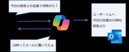
業務で進むLLM活用、その裏に潜む脅威とは？Microsoft 365 Copilotを介した攻撃検証（インターン体験記） 35 NTT docomo Business Engineers' Blog
NTT docomo Business Engineers' Blog
こんにちは、NTTドコモグループの現場受け入れ型インターンシップに「D2：攻撃者視点に立ち攻撃技術を研究開発するセキュリティエンジニア」ポストで参加させていただきました、太田です。 本記事では、本インターンシップでの取り組みについて紹介いたします。 NTTドコモグループのセキュリティ業務、特にOffensive Securityプロジェクト（以下、PJ）に興味のある方、インターンシップの参加を検討している方などへの参考になれば幸いです。 OffensiveSecurityPJとは 参加経緯 インターンシップ概要 Microsoft 365 Copilotの悪用 Microsoft 365 Co…
2日前
マルチプロダクト連携のAPI呼び出し経路をVPCオリジンを使って実装した話 31 カミナシ エンジニアブログ
カミナシの「カミナシ 設備保全」チームでプレイングマネージャー型のエンジニアリングマネージャーをしてます、すずけん（@szk3)です。 先日、社内プロダクトの連携機能を実装するにあたり、カミナシの別サービスから自チームが管理するサービスのプライベートなAPIを呼び出す必要があり、サービス間API呼び出し経路について、CloudFrontの機能のひとつであるVPCオリジンを使って実装しました。 本エントリでは、VPCオリジンを導入する過程で得たVPCオリジンについての知見や、その判断に至るまでの背景をシェアします。
3日前
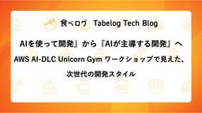
『AIを使って開発』から『AI主体の開発プロセス』へ AWS AI-DLC Unicorn Gym ワークショップで見えた、次世代の開発スタイル 26 Tabelog Tech Blog
食べログカンパニー 開発本部 飲食店プロダクト開発部 羽澤と申します。 先日、アマゾンウェブサービスジャパン合同会社が開催している、「AWS AI-DLC Unicorn Gym ワークショップ」を受講する機会をいただきました。 元々カカクコムではAI EXCELLENCEをバリューとして掲げ、AIを活用した開発に取り組んでいましたが、課題感もあったため期待して参加させていただきました。 本記事では、私が所属しているチームにおけるAI活用の状況と課題感、AWS AI-DLC Unicorn Gym ワークショップの紹介、そして今後の開発プロセスにどう活かしていくかの展望という形で筆を取りたいと…
3日前
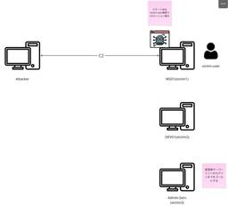
AIで攻撃者視点を強化する：LLMによるRed Teamオペレーション高度化検討（インターン体験記） 25 NTT docomo Business Engineers' Blog
こんにちは、NTTドコモグループの現場受け入れ型インターンシップに「D2：攻撃者視点に立ち攻撃技術を研究開発するセキュリティエンジニア」ポストで参加させていただきました、島田です。 本記事では、本インターンシップでの取り組みについて紹介いたします。 NTTドコモグループのセキュリティ業務、特にOffensive Securityプロジェクト（以下、PJ）に興味のある方、インターンシップの参加を検討している方などへの参考になれば幸いです。 Offensive Security PJとは 参加経緯 インターンシップ概要 LLM応用によるRed Teamオペレーション高度化検証 Juicy 情報とは…
2日前
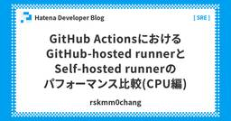
GitHub ActionsにおけるGitHub-hosted runnerとSelf-hosted runnerのパフォーマンス比較(CPU編) 20 Hatena Developer Blog
Hatena Developer Blog
システムプラットフォームチームの id:rskmm0chang です。 この記事は、はてなのSREが毎月交代で書いているSRE連載の2025年11月号です。10月の記事はid:cohalzさんの GitHub Organizationを安心して利用するための最近の機能紹介でした。 前回も11月に書いていて、11月になるとブログが書きたくなるようです。 developer.hatenastaff.com GitHub Actions Runnerのパフォーマンス比較を始めた経緯 はてなでは、Actions Runner Controllerを利用して、Self-hosted runnersを提供…
2日前
vLLM+Structured Outputを使ったテキストのラベリング高速化 17 Wantedly Engineer Blog
Wantedly Engineer Blog
こんにちは。ウォンテッドリーでデータサイエンティストをしている角川(@nogawanogawa)です。この記事では...
2日前
ローコードツールから Playwright 移行への道 2025 73 エムスリーテックブログ
エムスリーテックブログ
エンジニアリンググループ GM 兼 QA チームリーダーの窪田です。 本日はマネジメントチームブログリレー4日目として、現在取り組んでいる自動テストを Playwright で構築するチャレンジについてお話しします。
4日前
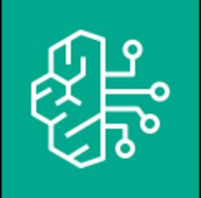
Amazon Bedrock の「gpt-oss」の日本語精度を評価する記事をAWSブログに寄稿しました 14 Taste of Tech Topics
Taste of Tech Topics
皆さんこんにちは。 Acroquest のデータサイエンスチーム「AcroYAMALEX」を率いるチームリーダー、@tereka114です。 AcroYAMALEX では、コンペティション参加・自社製品開発・技術研究に日々取り組んでいます（チーム紹介は こちら ）。 生成AIモデルの多くは、提供元のベンダーが学習させたものを利用するのが一般的だと思いますが（クローズドな状態）、 最近、「オープンウェイトモデル」というものが注目されています。 これは、モデルのパラメータが公開されているため、利用者が変更・調整できるもので、ファインチューニングよりも簡単に様々な環境でチューニングが可能になります。…
2日前
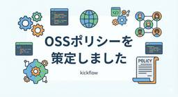
kickflowのOSSポリシーを策定しました 6 kickflow Tech Blog
kickflow Tech Blog
こんにちは、CTOの小林です。表題の通り、kickflow社ではOSSポリシーを策定して公開しました。 github.com 今回ポリシーを公開したのは、同じようにスタートアップで OSS 活動を推進したい企業やエンジニアにとって参考になるのでは、という思いもあります。本記事では、OSSポリシー策定の背景や手順を紹介しようと思います。
1日前
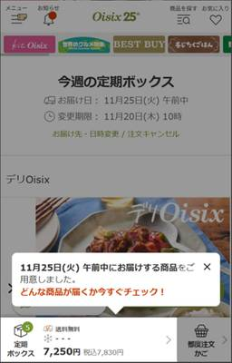
入会直後の解約率改善に向けた仮説検証プロセス 19 Oisix ra daichi Creator's Blog（オイシックス・ラ・大地クリエイターズブログ）
Oisix ra daichi Creator's Blog（オイシックス・ラ・大地クリエイターズブログ）
はじめに こんにちは。Oisix開発部バックエンドセクションの栗崎です。 私たちエンジニアリング本部では、今年度からプロダクト開発組織を導入し、各チームが自らビジネス目標を持って事業成長を目指す取り組みが始まりました。 私はその中で、とくに「ユーザの解約率を改善する」ことをミッションとするチームに所属しています。 チームは始動しましたが、解約要因は多岐にわたり不確実性が高いのが現実です。そこで、まずは「Oisixを十分に活用できている理想の状態」と「解約に至ってしまう実態」のギャップ（課題）を特定し、それを埋めていくアプローチをとることにしました。 本記事では、その過程で手探りで始めたデータ分…
3日前
AWS Blue/Green Deployment による RDS/Aurora PostgreSQL アップグレードの実践と学び 39 Wantedly Engineer Blog
インフラチームの笠井（@takayukikasai）です。ウォンテッドリーでは複数の Amazon RDS for...
4日前

コーディングエージェントのカスタムコマンドでGit操作を効率化 8 KAKEHASHI Tech Blog
KAKEHASHI Tech Blog
こんにちは、椎葉です。カケハシでVPoT(VP of Technology)をやっています。今日は、僕が使っているCursorのカスタムコマンドを2つ紹介します。 カケハシではコーディングエージェントとして、Cursor、Claude Code、GitHub Copilot、そしてDevinを利用できます。その中で僕はメインではCursorを使用しています。最近だと、Cursorを使ってTerraformによるAWSのインフラ構築をやっていて、便利だなーと思っています。 そんな日々の作業の中で、コミットとプルリクエストの作成をよく実施しているので、その2つをCursorのカスタムコマンドとして…
3日前
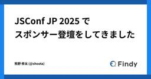
JSConf JP 2025 でスポンサー登壇をしてきました 8 Findy Tech Blog
Findy Tech Blog
こんにちは。こんばんは。 開発生産性の可視化・分析をサポートする Findy Team+ 開発のフロントエンドリードをしている @shoota です。 11月16日にグラントウキョウサウスタワーにて開催されたJSConf JP 2025でスポンサーセッションに登壇してきました。 今回はJSConfの雰囲気や登壇内容についてご紹介したいと思います。 jsconf.jp 会場へ出発！ 会場到着 ブースや発表の聴講 スポンサーセッション登壇 最終確認 登壇たのしい！！ おわりに 会場へ出発！ 普段は青森県でフルリモートとして働いているので、当日の早朝の新幹線に乗って会場に向かいました。 会場は東京駅…
3日前
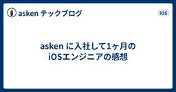
asken に入社して1ヶ月のiOSエンジニアの感想 14 asken テックブログ
asken テックブログ
はじめに こんにちは。今月より asken に入社いたしました、髙橋と申します。 askenに入社してあっという間に1ヶ月が経ち、エンジニアとして新しい環境に身を置き、たくさんの刺激を得たので、レポートにまとめてみようと思います！ 私の経歴 新卒から iOS エンジニアとしてキャリアを重ねてきました。今年で10年目を迎え、これまで暗号資産の販売所アプリ、BtoB向けのSaaSアプリ、金融系アプリなど、さまざまな分野でiOSアプリの開発を担当してきました。 開発以外ではゲームや映画、甘いものが好きなアラサーエンジニア♂です。 asken に決めた理由 甘いもの好きがたたったのか、30代に入り、腹…
3日前
TPAC 2025 参戦記 前編: Overview 7 Cybozu Inside Out | サイボウズエンジニアのブログ
Cybozu Inside Out | サイボウズエンジニアのブログ
25新卒プロダクトエンジニアの mehm8128 です。 今年4月より W3C に加入したサイボウズは、11/10～11/14 に行われた TPAC 2025 に10名ほどで参加してきました。 前編と後編に分けて、その様子や感想をお送りします。 Shownote 11/25 の Cybozu Frontend Monthly にて、参加した一部のメンバーで振り返りの様子を配信しました。前編では、その中身を簡単にさらいます。詳細はアーカイブをご覧ください。 cybozu.github.io www.youtube.com TPAC とは TPAC 2025: Overview W3C が開催する…
2日前
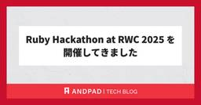
Ruby Hackathon at RWC 2025 を開催してきました 7 ANDPAD Tech Blog
ANDPAD Tech Blog
こんにちは柴田です。Ghost of Yotei もひと段落したので今年プレイしてきたゲームのプラチナトロフィー獲得を進めながら GOTY にノミネートされた作品を見て大賞の発表を心待ちにしている日々です。 さて今回は 11/5 に開催した Ruby Hackathon at RWC 2025 とアンドパッドの宴についてご紹介します。 Ruby Hackathon at RWC 2025 - Ruby Association | Doorkeeper Ruby Hackathon とは何か Ruby Hackathon の前身は RubyKaigi の本番前日に開催していた開発者会議です。月次…
3日前
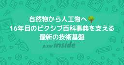
自然物から人工物へ - 16年目のピクシブ百科事典を支える最新の技術基盤 13 pixiv inside
pixiv inside
こんにちは。ピクシブ百科事典の開発をしております、フロントエンドエンジニアの ahu です。 ピクシブ百科事典 は、「みんなでつくる百科事典」を合言葉に運営されている、オンライン百科事典サービスです。2009年の11月10日にβ版がリリースされ、今年で16周年を迎えました 🎉 そんな歴史あるサービスですが、現在は Next.js v15 と React v19 で動いており、これはピクシブのサービスの中でも屈指の新しさです。今回はそんなピクシブ百科事典の開発体制について、「自然物から人工物へ」という視点から、チーム再編後の直近1年半での取り組みを紹介します。 「自然物」だったピクシブ百科事典と…
3日前
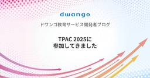
TPAC 2025 に参加してきました 13 ドワンゴ教育サービス開発者ブログ
ドワンゴ教育サービス開発者ブログ
W3Cの年次総会TPACが、2025年は神戸で開催されました。ドワンゴからも参加してきたので、目の当たりにしてきたことをご共有します。
3日前
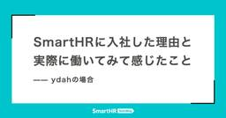
SmartHRに入社した理由と実際に働いてみて感じたこと —— ydahの場合 13 SmartHR Tech Blog
SmartHR Tech Blog
はじめまして、ydahです。読み方が分かりづらいIDですが、「わいだー」と読みます。私は2025年11月にSmartHRに入社しました。 今はプロダクトエンジニアとして、SmartHRの外部サービス連携基盤を開発しています。 私はRubyというプログラミング言語や、Ruby周辺で育まれているコミュニティが大好きです。生まれも育ちも大阪で、Kyobashi.rbという大阪の京橋を拠点にしたRubyコミュニティの主催もしています。 2024年からは大阪Ruby会議や関西Ruby会議のチーフオーガナイザーを務めています。 趣味としてオープンソースソフトウェアの開発を行っており、Rubyコミッター、R…
4日前

LayerX AI Agentブログリレー最終回！全体振り返りと俺の推し記事を紹介するぜ！ 3 LayerX エンジニアブログ
LayerX エンジニアブログ
こちらはLayerX AI Agentブログリレー55日目の記事です。 LayerX バクラク事業部で AI/MLOpsエンジニアをしている中村(@po3rin)です。AI Agentブログリレーが55日を迎えました！！12月はアドベントカレンダーが始まるためAI Agentブログリレーは終了します。区切りとして、ここまでブログリレーを運用してきた所感をまとめ、私の独断と偏見で選んだAI Agentブログリレーの名作を振り返ります。 AI Agentブログリレーとは LayerXが始めたAI Agent開発縛りで記事を書くというイカれたブログリレーです。AI Agentブログリレーの全アーカイ…
1日前
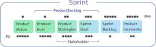
スクラムマスター研修でよく理解できたデベロッパーのあり方 9 Inside of LOVOT
Inside of LOVOT
みなさんこんにちは！ふるまいチーム、アニメーター改めビヘイビアデザイナーの中里です。 社内外で"アニメーター"と呼称されていた我々ですが、採用活動強化などを機にロールが分かりやすくなるよう呼称を"ビヘイビアデザイナー"に変更しました。多少分かりやすくなったでしょうか？社内での浸透率は体感50％くらいです。 本題と逸れてすみません、今日は6月に受講した認定スクラムマスター(CSM)研修でなんとスクラムマスター(SM)だけではなくデベロッパー(Dev)のこともよく理解してしまったので、記事にしたいと思います。レッツゴー なぜスクラムマスター研修を受けたのか わたしはDevですが、エンジニアではない…
4日前
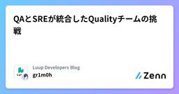
QAとSREが統合したQualityチームの挑戦 19 Luup Developers Blogのフィード
はじめにLuupに所属している、ぐりもお（@gr1m0h）です。2025年7月、私が所属していたInfra/SREチームとQAチームが統合し、新たにQualityチームが発足しました。この体制変更は、品質保証とサイト信頼性エンジニアリングを統合的に捉える試みであり、従来の組織サイロを超えた挑戦だと考えています。本記事では、SREチームのメンバーとしての視点から、私の考えを整理してお伝えします。QAとSREをどのように統合するか、そしてSREのプラクティスを用いて品質と信頼性を一貫して確保していくかについて説明したいと思います。なお、本記事では以下の用語を次のように定義していま...
5日前
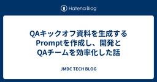
QAキックオフ資料を生成するPromptを作成し、開発とQAチームを効率化した話 19 JMDC TECH BLOG
JMDC TECH BLOG
Pep Up モバイルアプリチームのスクラムマスター兼エンジニアの @mrtry です。 近年のアジャイル開発の現場において、QAチームの業務負荷が高まっていることは、多くの組織で共通の課題となっています。 私たちの組織でも同様に、QAチームのリソース不足が顕在化していました。その原因を深く掘り下げていくと、開発チームからQAチームへの「情報共有」に一つの大きなボトルネックがあることが分かりました。 具体的には、QAキックオフ（テスト計画前の開発チームとQAチームのMTG）の際に開発チームから提供される資料の形式や粒度が、プロジェクトや担当者によってバラバラだったのです。 この「情報共有インタ…
5日前
WordPress on EC2なサイトをHugo on Cloudflareに移行してAIネイティブにしました 4 LIVESENSE ENGINEER BLOG
LIVESENSE ENGINEER BLOG
リブセンスのWordPress on EC2で運用されていた採用サイトを、Hugo + Cloudflare Pagesへ移行した事例を紹介します。長年の技術的負債を解消し、エンジニア職以外の方もAIエージェントを使ってPRを出せる、AIネイティブな開発・運用体制を構築するまでの苦労と成果を解説します
2日前
新Linuxカーネル解読室 - パケット受信処理 ～UDPレイヤーにおける受信処理～ 4 VA Linux エンジニアブログ
VA Linux エンジニアブログ
前回は、受信パケットがIP層に到達した後の処理について解説しました。今回は、その続きとなるUDPレイヤーの処理について解説していきます。
3日前
【福岡/東京 両日開催！】Findy AI Meetupを開催しました 6 Findy Tech Blog
こんにちは。 ファインディ株式会社でテックリードマネージャーをやらせてもらってる戸田です。 現在のソフトウェア開発の世界は、生成AIの登場により大きな転換点を迎えています。 GitHub CopilotやClaude Codeなど生成AIを活用した開発支援ツールが次々と登場し、開発者の日常的なワークフローに組み込まれつつあります。 そのような状況の中で先日、福岡でFindy AI Meetupの第3回を開催しました！ findy-inc.connpass.com そして今回は更に！東京でFindy AI Meetupを初開催しました！ findy-inc.connpass.com 当日参加くだ…
4日前
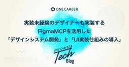
デザイナーも実装する〜FigmaMCPを活用した「デザインシステム開発」と「UI実装仕組みの導入」〜 3 ONE CAREER Tech Blog
ONE CAREER Tech Blog
みなさんこんにちは！就活支援サービス「ワンキャリア」（学生版） Webチームの北原（X：hakshu25）とプロダクトデザイナーの成井です。今回は、私たちが当社のデザイン・フロントエンドの課題から挑戦した2つの話をご紹介できればと思います。続きをみる
2日前
“型”を破りに金沢へ—— TSKaigi Hokuriku 2025 に参加してきました
3 kickflow Tech Blog
夜の金沢駅前の鼓門がビグ・ザムみたいでカッコいい こんにちは。プロダクト開発部でエンジニアをしている秋山です。 カンファレンスの秋も終盤戦。先週の JSConf JP 2025 に引き続き、今週は TSKaigi Hokuriku 2025 に同僚の芳賀と参加してきました！ この記事ではイベントレポートをお送りします。
2日前
AWS WAFのアプリケーションレイヤーでのDDoS保護をIaCで実装する 3 [公開中] AQ Tech Blog
[公開中] AQ Tech Blog
はじめに 2025年6月に、AWS WAFがアプリケーションレイヤー（L7）のDDoS保護を実現するAWSマネージドグループのサポートを開始しました。サポートの開始から日数が経過していますが、CloudFormationテンプレートを作成する際に参考にできる記事が見当たらなかったので、今回作成しました。IaCでの記述方法に困っている方の助けになれば幸いです。
3日前
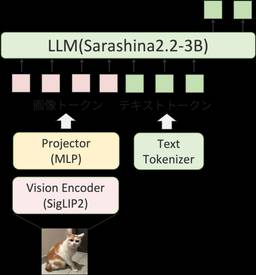
Sarashina2.2-Vision-3B: コンパクトかつ性能が高いVLMの公開 13 SB Intuitions TECH BLOG
SB Intuitions TECH BLOG
概要 SB Intuitionsでは、大規模視覚言語モデル（Vision-Language Model; VLM）の開発に取り組んでおり、これまでに公開時点で日本語ベンチマークにおいて国内最高性能であったSarashina2-Visionシリーズを公開しています。 この度、アカデミアや産業界におけるVLMの研究開発にさらに貢献することを目的として、弊社のコンパクトかつ高性能な日本語大規模言語モデルであるSarashina2.2-3B-Instructをベースに開発したVLMであるSarashina2.2-Vision-3BをMITライセンスのもとで公開します。このモデルは同サイズ帯では日本語ベ…
5日前
社内AIヘルプデスク RAG精度改善の軌跡 〜自動評価システムの構築とマネージドRAGへの移行〜 5 Blog on DeNA Engineering
Blog on DeNA Engineering
はじめに こんにちは。DeNA IT戦略部のtolinerです。このブログは以下のブログの続きです。前回の記事で解説した背景知識や一部の用語を前提として進めていくため、ぜひ先にこちらを一読してください。社内AIヘルプデスク 正答率80%達成 RAG精度改善の軌跡 | BLOG - DeNA Engineering はじめに こんにちは。DeNA IT戦略部の森嶋です。 DeNAは今、「AIオールイン」を掲げ、全社を挙げてAIという新たなテクノロジーの力を活用する「AIジャーニー」を歩み始めています。これは業務のあり方を根本から見つめ直し、会社全体の未来を創っていくための挑戦です。 今回は、その中でも重要な柱の一つである「AIによる全社の生産性向上」に焦点を当てます。「業務量を半分に、生 …
3日前
「情報窃取」と「情報搾取」：沈黙は金か？ 4 DARK MATTER
DARK MATTER
「情報〇取」をどう読みますか？サイバーセキュリティ現場で起きている「誤読の連鎖」について書きました。本当の問題は、誰もが沈黙していることかも
4日前
最新の ChatGPT モデル GPT-5 Thinking は数理最適化問題のモデリングが割とできてしまう 9 Insight Edge Tech Blog
Insight Edge Tech Blog
Insight Edgeのデータサイエンティストのki_ieです。数理最適化の専門家として、これまでさまざまな課題を数理最適化問題としてモデリングしてきました。 モデリングはアルゴリズム設計と比べて注目を集めることが少ないようですが、実際には技術的な知見・調査を要求する骨の折れるタスクです。 このタスクを賢いLLMが手伝ってくれたら嬉しいですね！ 昨年の記事 では ChatGPT の OpenAI o1 にどれだけ数理最適化問題のモデリングを任せられるか試してみました。今回の記事では最新の ChatGPT モデルである GPT-5 Thinking を使って同様の実験を行い、どこまで使えるもの…
5日前
PostgreSQL Conference Japan 2025 参加レポート 3 Wantedly Engineer Blog
こんにちは！ウォンテッドリーでインフラエンジニアをしている加藤 健 (@kkato25)です。2025年11月21...
4日前

エンジニアリングマネージャーが語るBUYMA開発の魅力～事業志向と技術志向が両立する環境～ 3 エニグモ開発者ブログ
エニグモ開発者ブログ
国内最大級の海外ファッションECサイト「BUYMA（バイマ）」を運営するエニグモ。今回は、エンジニア組織を支えるエンジニアリングマネージャーとして、プロジェクト推進からメンバー育成まで幅広く携わる穴澤さんにインタビューしました。これまでのキャリアやエニグモに入社した経緯、現在の役割、そして「BUYMA」の開発に携わる魅力について伺いました。 これまでのキャリアとエニグモに入社した経緯を教えてください 前職では、オンライン英会話サービスを開発する会社でWebサービス開発チームのリーダーを務めていました。 サーバーサイドエンジニアとして英会話レッスンの予約システムや決済機能のメンテナンスからスター…
4日前
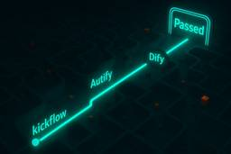
AI申請前レビューのE2Eテスト自動化 〜Difyを活用した動的テキスト検証〜 4
kickflow Tech Blog
AIのテスト、毎回結果が違って困ってませんか? こんにちは、kickflow QAチームのNです。 kickflowではAutifyを使ってE2Eテストの自動化を行っています。 最近AI申請前レビュー機能がリリースされたのですが、AIが出す指摘文が毎回微妙に違うため、指摘内容が妥当かの検証をどう自動化するか試行錯誤していました。 今回は、AutifyとDifyを使ってこの問題を解決したので、この取り組みを紹介します。
5日前
AIファーストなドキュメント戦略 - DocCommentにユビキタス言語を書くだけのシンプルなアプローチ 3 ゆめみのフィード
AIコーディング、特にClaude CodeやCursorのようなツールの普及に伴い、「AIにいかに正確なコンテキストを与えるか」が開発者の最大の関心事になっています。その中で現在、 SDD（Spec Driven Development）的なアプローチ——つまり、詳細な仕様書をAIに書かせ、それこそが正としてメンテナンスを続ける手法——が注目されています。しかし、私は実務での経験を通じて、「仕様書を充実させるよりも、コード内のDocCommentを充実させるシンプルなアプローチこそが、AIファーストな開発なのでは？」 という考えに至りました。SDD自体賛否あるアプローチで、好意的な...
5日前